Kolme ikimuistoista pakumatkaa
Tervetuloa lukemaan kolmen unohtumattoman pakureissun reissutarinoita! Toivon, että saat näistä reissukertomuksista inspiraatiota omiin seikkailuihisi, olitpa sitten vasta suunnittelemassa ensimmäistä pakumatkaasi tai etsimässä uusia kohteita seuraaville reissuille. Lähde mukaan Turun saariston kauniille saarille, Banffin kansallispuiston uskomattomiin vuorimaisemiin ja Islannin ainutlaatuiseen luontoon.
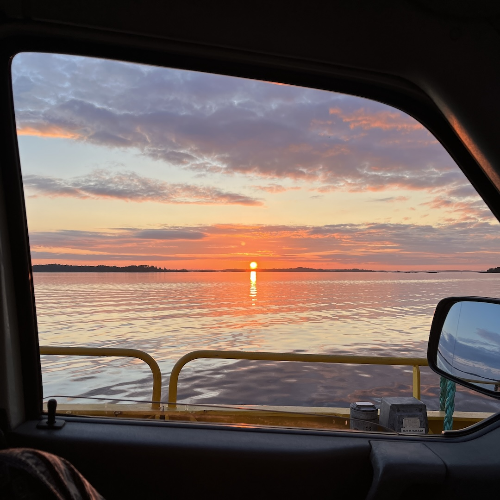
Kuuden saaren kierros Turun saaristossa
Pakkasimme reissukamat valkoiseen pakettiautoon ja lähdimme ajamaan kohti Vuosnaisten lauttarantaa. Suuntasimme lautalla kohti Åvan saarta, josta jatkoimme pitkin punaisia saaristoteitä kohti Fisketorpetin leirintäaluetta Korsössä. Leirintäalue oli todella kauniilla paikalla ja siellä oli kaksi ihanaa puusaunaa, joista toisesta varasimme saunavuoron illaksi. Vietimme aikaa kallioilla istuen, ystäväni maalasi akvarelliväreillä luonnoslehtiöön ja nautimme eväitä merimaisemissa.
Matkamme jatkui seuraavana iltana kohti Houtskarin saarta pienen yhteisaluksen kyydissä. Lautalle mahtui vain kaksi autoa ja matka oli upein lauttamatka, jonka olen koskaan kokenut. Suosittelen, ehdottomasti tätä reittiä ja varaamaan lauttamatkan illaksi, jolloin voit nauttia auringonlaskusta vaikka suoraan omasta autosta käsin. Houtskarissa yövyimme yhden yön Kittuis campingissä. Aamupalan ja -uinnin jälkeen hyppäsimme seuraavaan lauttaan kohti Korppoota. Kävimme pienen suomalaisen Niinmun vaatebrändin liikkeessä ja matkaan tarttui mukaan pari ihanaa Utö-villapaitaa. Korppoossa yövyimme Rumar Strandin pienellä "leirintäalueella", johon kuului ilmainen kerta yleiseen saunavuoroon, jossa oli myös tarjolla palju.
Matkamme seuraava saari oli Utö, jonne matkasimme ilmaisen yhteysaluksen kyydissä Nauvon Pärnäisten satamasta. Utössä nautimme aamupaloista laiturilla, päiväunista kallioilla ja loputtomasta mereen ulottuvasta horisontista. Matkamme päättyi Nauvoon, jossa ystäväni ranskankielen taito tuli tarpeeseen, sillä leirintäalueen pitäjä oli ranskalainen. Fiilistelimme viimeistä reissuiltaa syömällä iltapalaa laiturilla auringon laskeutuessa järven taakse.
🌿 Top 3 saunakokemusta
- ▸ Korsön Fisketorpet leirintäalueen puusauna.
- ▸ Korppoon Rumar Strandin sähkösauna ja palju.
- ▸ Utön rantasaunat merinäköalalla.
⛴️ Top 3 lauttamatkat
- ▸ Ålandstrafiken liikennöimä lauttamatka Vuosinaisita Åvaan.
- ▸ Houtskarin reitti Torsholmasta Roslaxiin pienen yhteysaluksen kyydissä.
- ▸ Viiden tunnin ilmainen lauttamatka Nauvosta Utöhön.
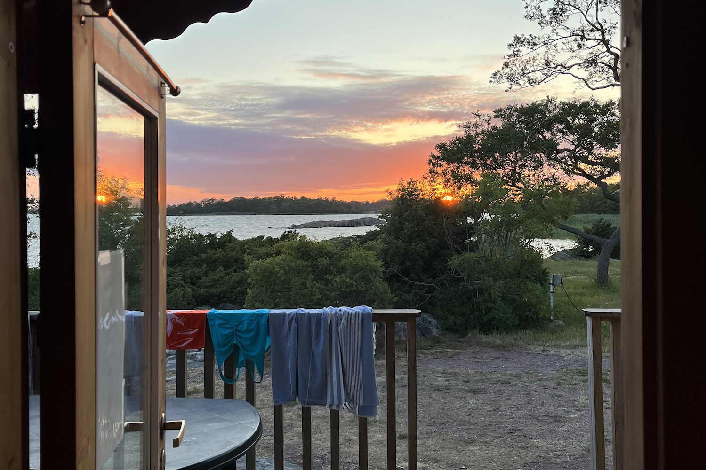
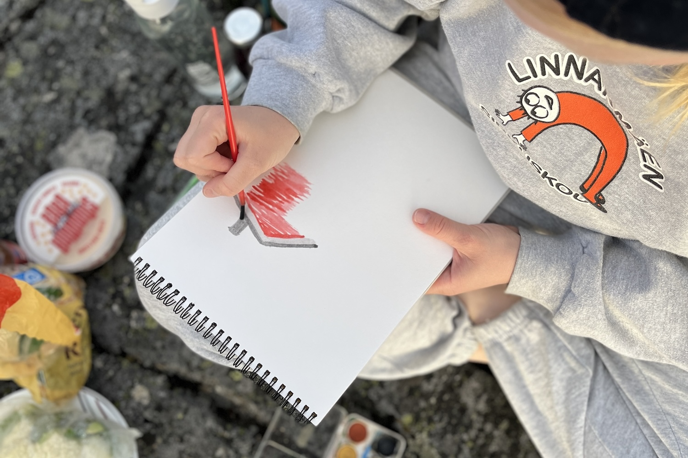
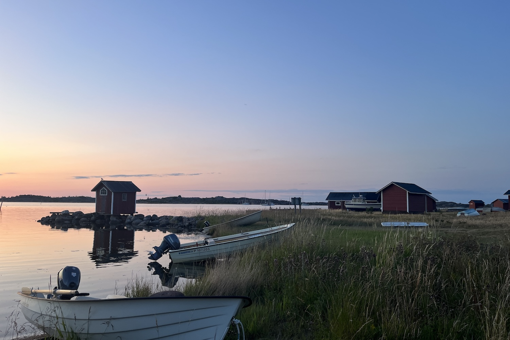
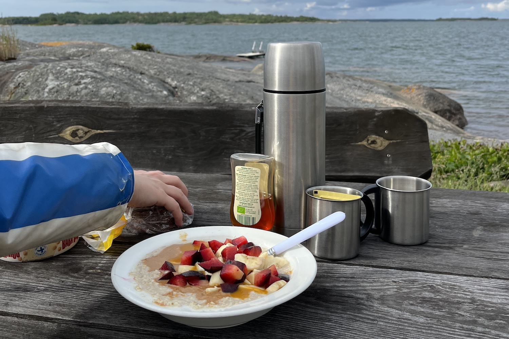
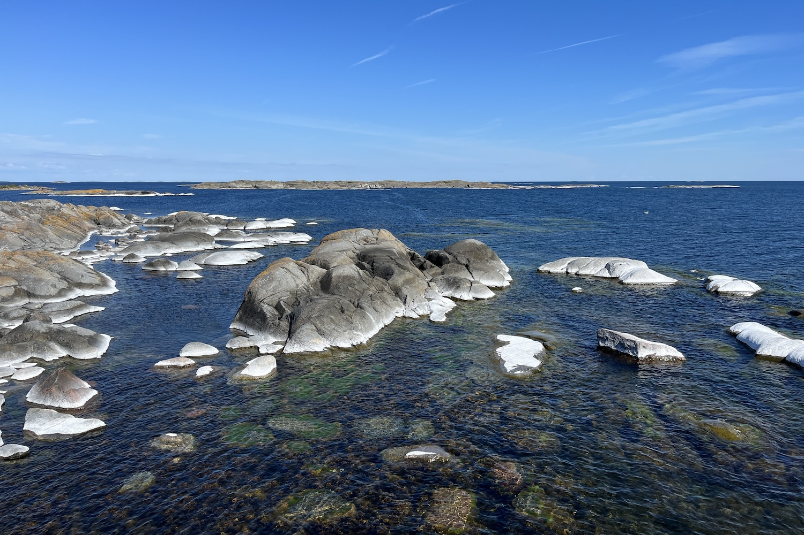
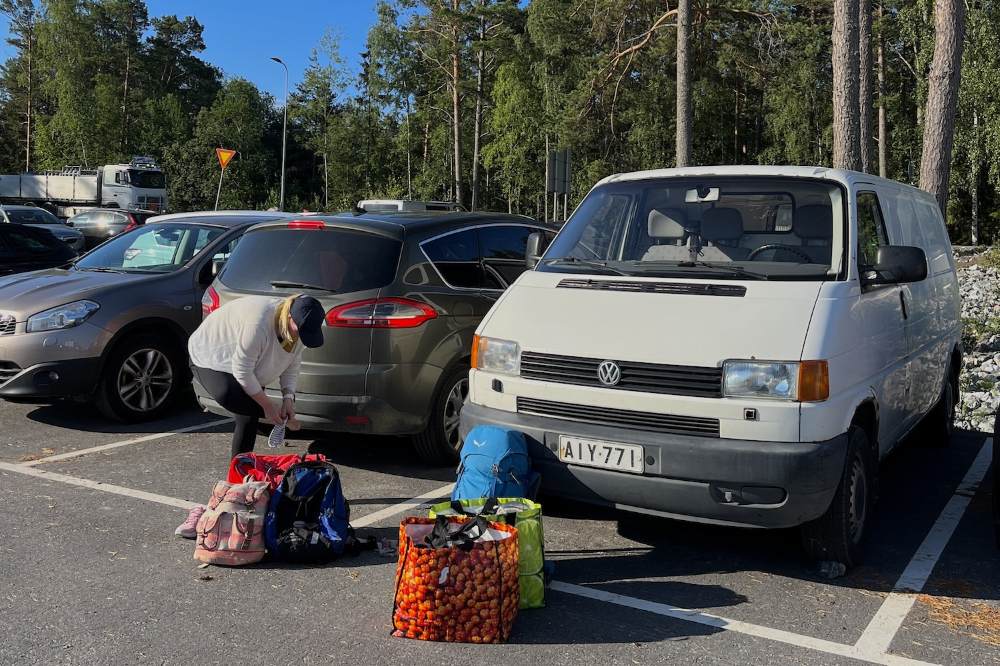
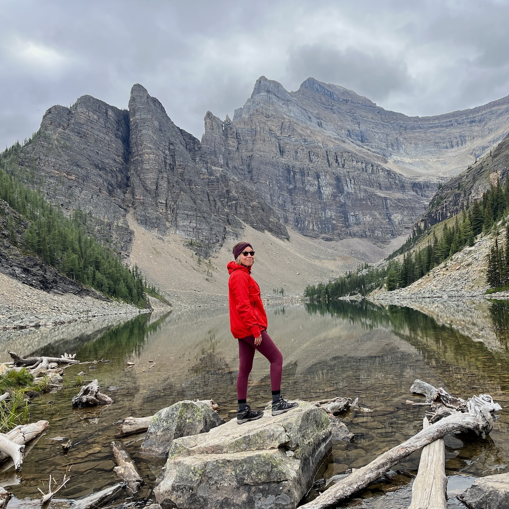
Neljä päivää Banffin kansallispuistossa Kanadassa
Matkustin Kandaan ystäväni häihin ja halusin yhdistää reissuun myös oman seikkailun lähellä oleviin luontokohteisiin. Häät olivat lähelle Calgaryn kaupunkia, josta ei ole kuin puolentoista tunnin ajomatka Banffin kansallispuistoon. Yövyin koko ajan samalla Tunnel Mountain Village leirintäalueella, josta oli lyhyt matka Banffin pikkukaupunkiin. Heti reissun aluksi pääsin kokeilemaan koskimelontaa ensimmäistä kertaa kahdeksan hengen kumiveneessä. Meloimme Hydra River Guides ohjaajan opastuksella muutaman tunnin Kicking Horse jokella, jossa on 1-3 luokan koskia. Koskimelonta oli jännittävää, hauskaa ja se ylitti kaikki odotukseni!
Reissun aikana vierailin Lake Louisen jäätikköjärvellä ja tein päivävaelluksen Lake Agnes Tea Houseen. Viihdyin reitillä niin pitkään, etten ehtinyt viimeiseen bussiin Moraine Lakelle. Se harmitti hetken, mutta päädyinkin ajamaan Peyto Lakelle ja sen upea turkoosi väri tuntui melkein epätodelliselta. Osallistuin ohjatulle päivävaellukselle Sunshine Meadowsin alppialueella, joka on myös sade- ja sulamisvesien vedenjakaja. Tämä oli minusta todella kiinnostava fakta, jota en olisi tiennyt ilman aluetta tuntevaa vaellusohjaajaa! Reissun lopussa vierailin kansallishistoriallisella Cave and Basin alueella, jossa pääsin tutustumaan alueen historiaan. Matkan kruunasi rentoutuminen Banff Upper Hot Springsissä, josta oli upeat vuoristonäkymät.
🛶 Top 3 aktiviteetit
- ▸ Koskimelonta kaunista Kicking Horse jokea pitkin.
- ▸ Ohjattu päivävaellus Sunshine Meadows alppialueella.
- ▸ Rentoutuminen Banff Upper Hot Springsissä.
💎 Top 3 vierilukohteet
- ▸ Lake Louisen turkoosi jäätikköjärvi.
- ▸ Cave and Basin kansallishistoriallinen alue.
- ▸ Columbia Icefield Skywalkin elämys.
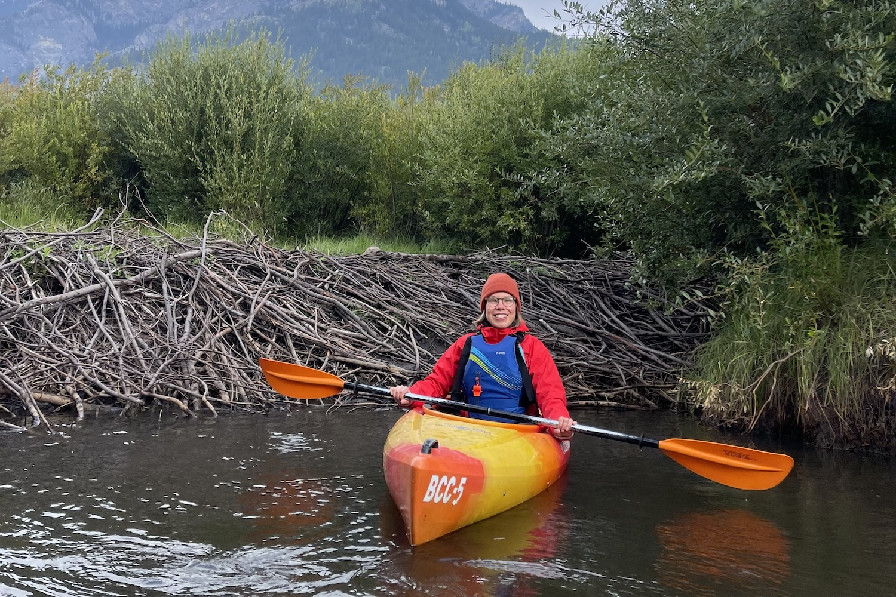
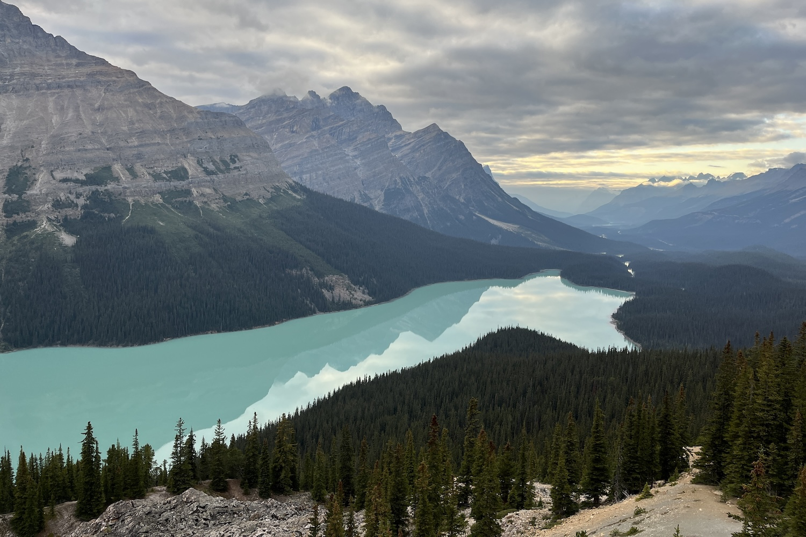
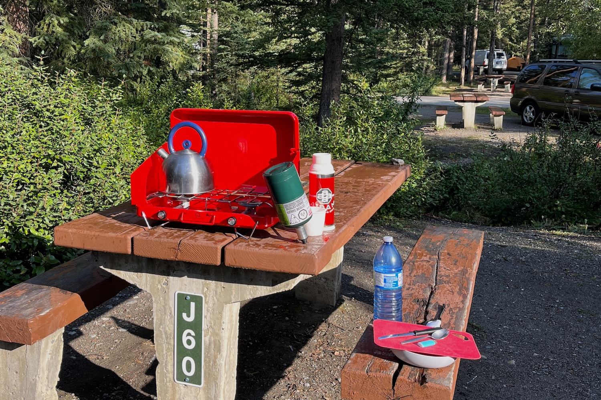
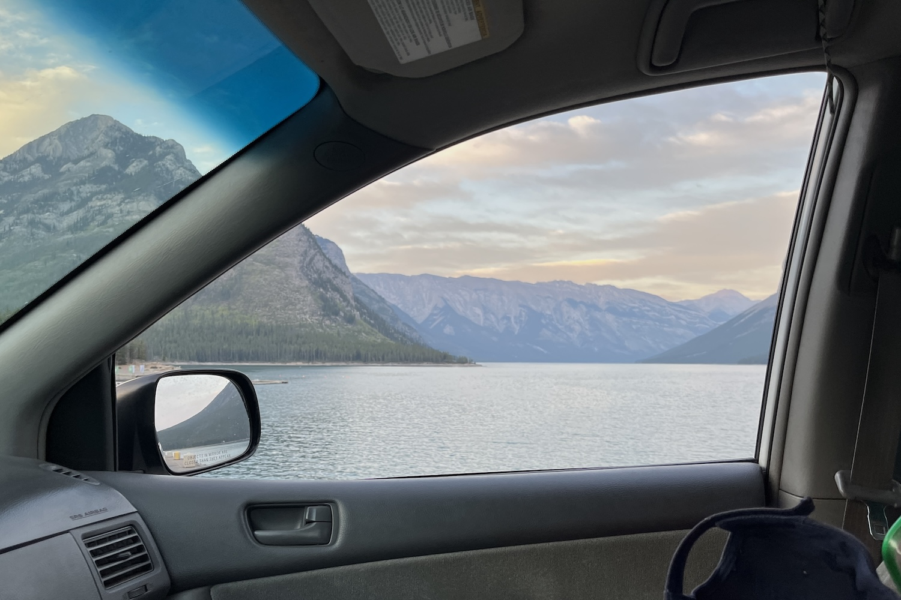
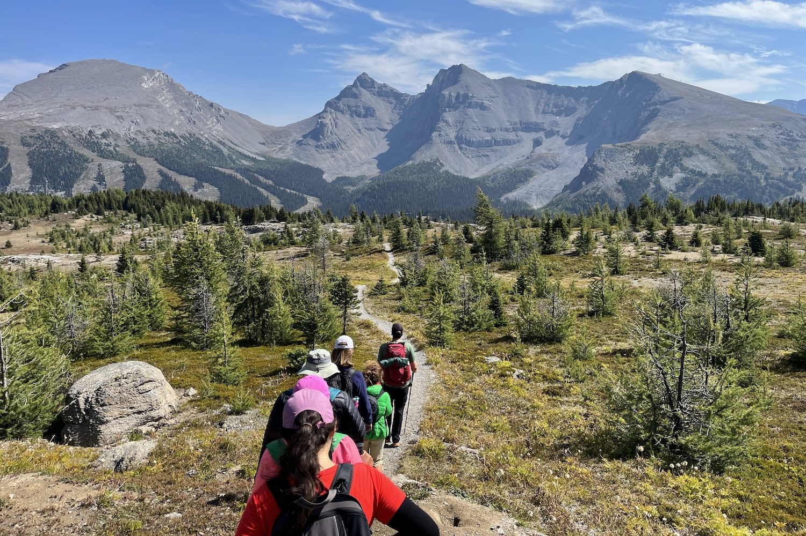
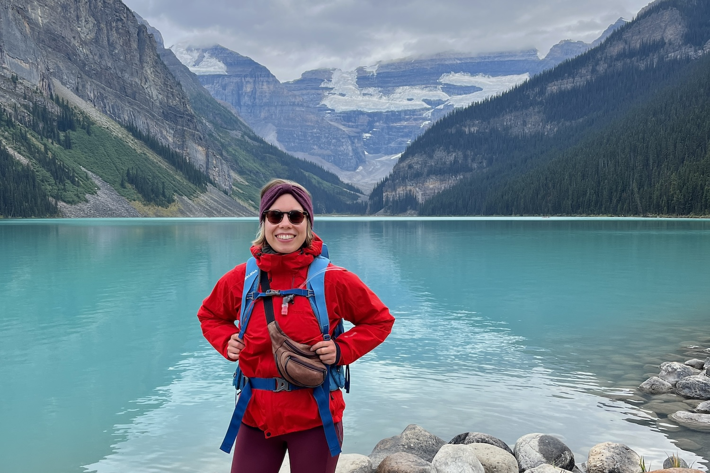
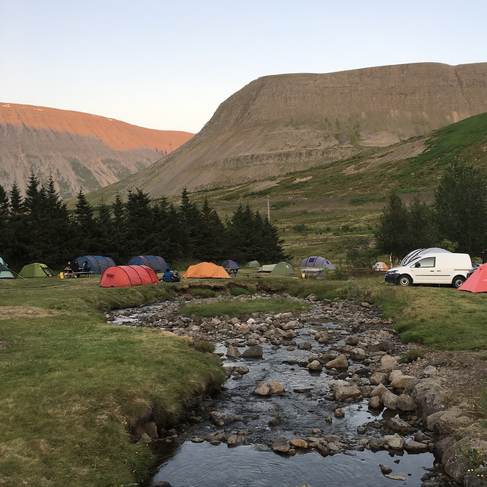
10 päivän roadtrip Islannissa
Oli halunnut pitkään matkustaa Islantiin ja siihen tuli täydellinen hetki, kun ystäväni meni kesävaihtoon Islantiin. Suunnittelimme reissun suhteellisen spontaanisti, ainoa, mitä varasimme oli reissupaku. Meillä oli samanlainen ajatus, mitä halusimme kokea ja nähdä roadtripin aikana. Molemmille oli tärkeää suunnata matka hieman tuntemattomammille alueille ja siksi reissun ykköskohteeksi valikoitui Westfjordsin alue luoteessa. Siellä on vähän tursiteja ja paljon karua, mutta kaunista luontoa.
Matka alkoi kuitenkin ensin tutustumalla Snæfellsjökull kansallispuistoon, jossa kävimme heti ensimmäisenä katsomassa Game of Thronesistakin kuuluisaa Kirkjufellin vuorta. Vierailimme myös Djúpalónssandur mustahiekkaisella rannalla ja Saxhóllin vulkaanisella kraaterilla. Sitten jatkoimme matkaa kohti Westfjordsin aluetta, jossa yövyimme yhdessä kivoimmista leirintäalueista. Varsinainen Laugarhóllin leirintäalue oli vaatimaton, mutta sen yhteydessä toimii hotelli, jossa on kuuma lähde sekä lämmin ulkona oleva uima-allas. Saavuimme leirintäalueelle myöhään illalla ja ystävälliset omistajat antoivat meidän käyttää kahdeksan euron leirintämaksun hinnalla uima-allasta sen sulkemisajan jälkeen. Illan hämärässä kahdestaan uiminen oli maagista.
Suuntasimme seuraavaksi Strokkur geysirin ja Þingvellir kansallispuiston turistinähtävyyksien kautta Islannin etelärannikolle. Kävimme katsomassa kuuluisaa Seljalandsfossin vesiputousta sekä sen viereistä vähemmän tunnettua Gljúfrabúi vesiputousta, joka oli vielä sykähdyttävämpi! Ennen reissun päättymistä vierailimme vielä Vikin kylässä ja ikonisella hiekkarannalla. Ei olisi voinut olla parempaa päätöstä reissulle!
⛺️ Top 3 leirintäalueet
- ▸ Þakgilin maisemat ovat kuin suoraan fantasiaromaanista.
- ▸ Laugarhóllissä voi uida lämpimässä ulkoaltaalla.
- ▸ Þingvellir sijaitsee lähellä turistinähtävyyksiä.
⛰️ Top 3 luontokohteet
- ▸ Snæfellsjökull kansallispuistosta löydät kuuluisan Kirkjufellin.
- ▸ Westfjordsin alueella vältät turistitulvat ja nautit luonnosta.
- ▸ Gljúfrabúi vesiputouksen vierestä löydät myös Seljalandsfossin.
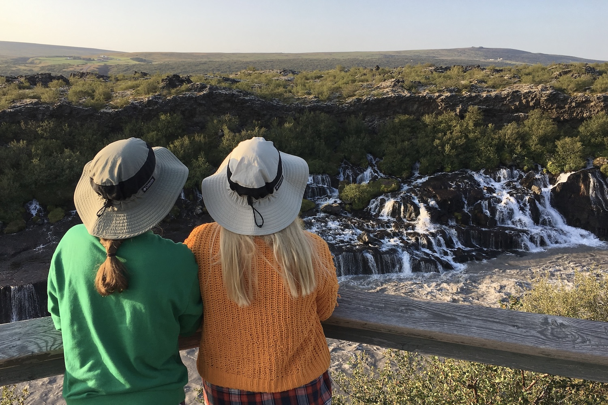
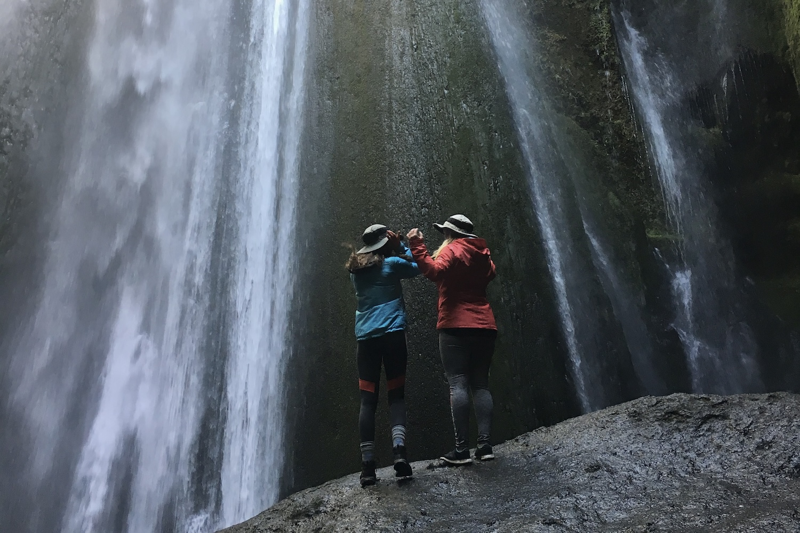
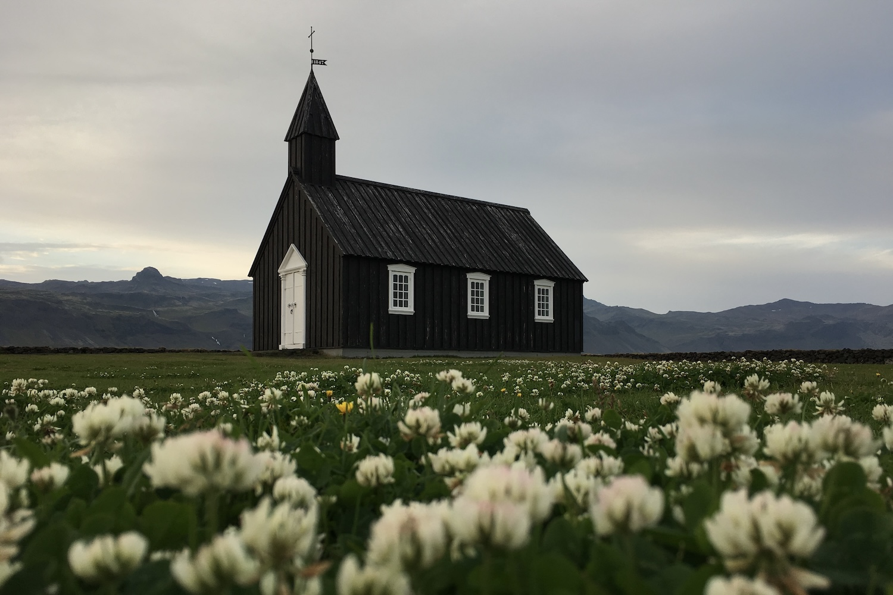
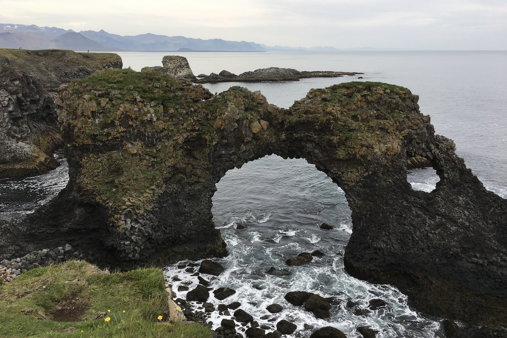
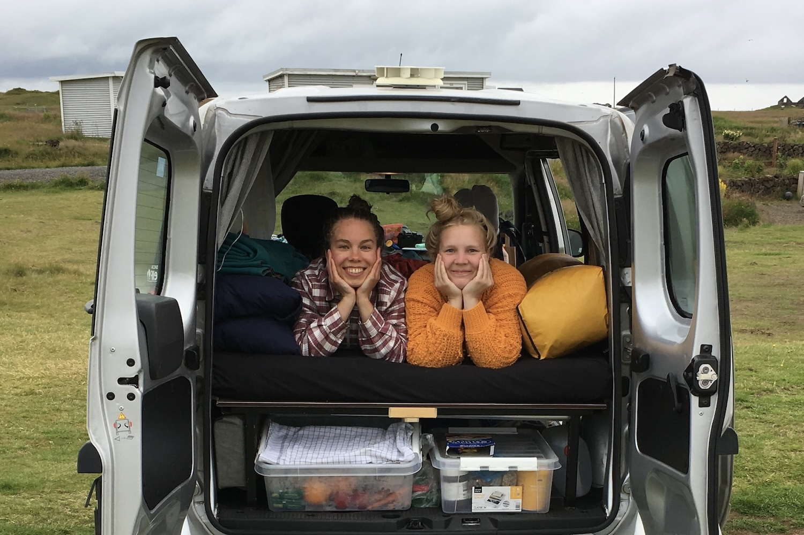
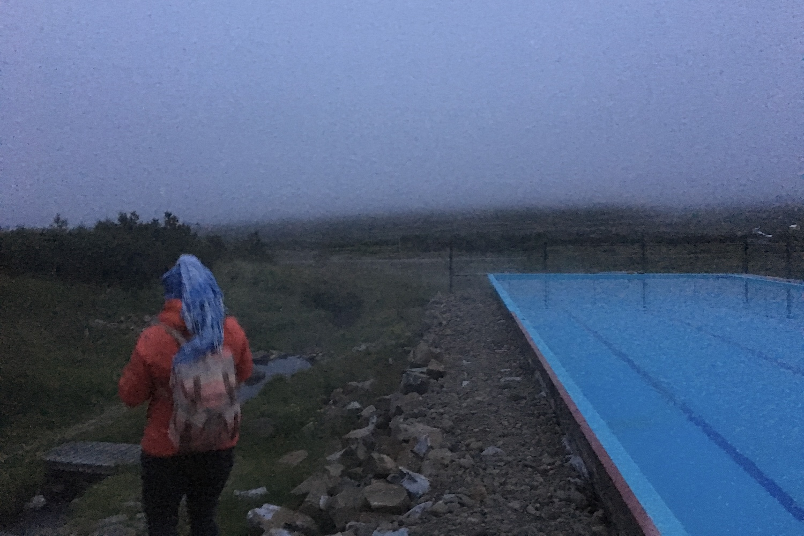